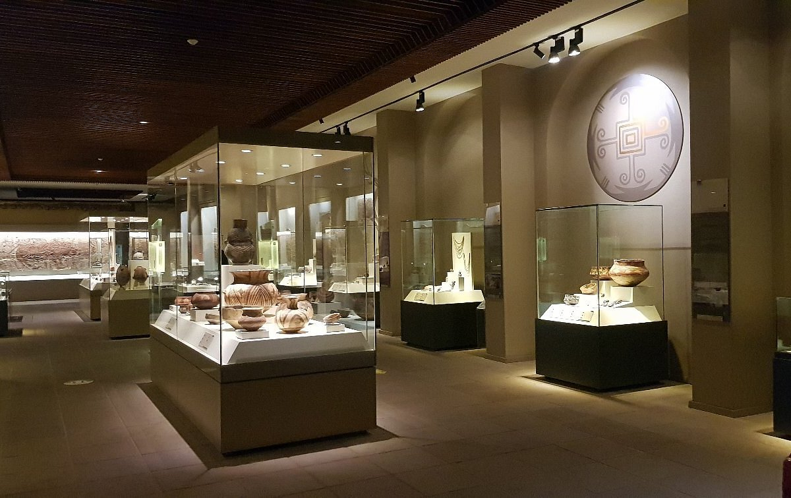
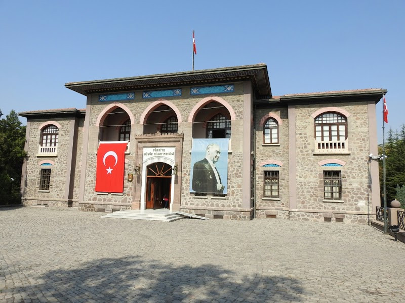
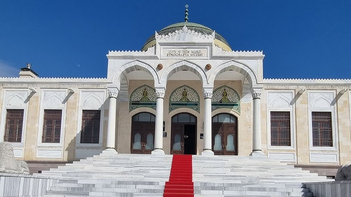
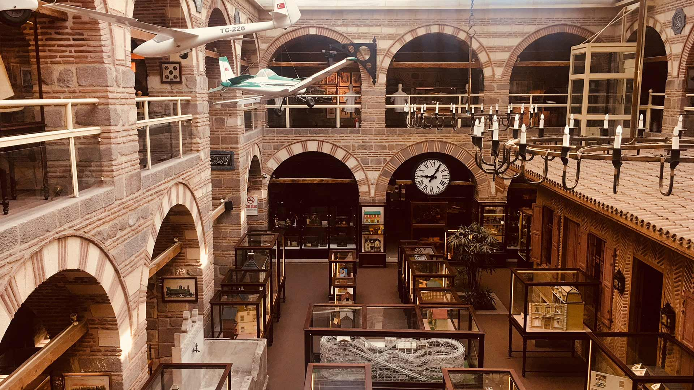
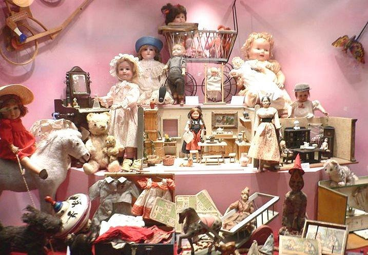

Hitit, Urartu, Frig ve Roma medeniyetlerine ait eserlerle Türkiye'nin en zengin arkeoloji müzelerinden biridir.
Adres: Gözcü Sk. No:2, Ulus/Ankara
Ziyaret Saatleri: Her gün 08:30 – 17:30
Giriş: Ücretli (Tam: 90 TL)

1924-1960 arasında Türkiye Büyük Millet Meclisi olarak kullanılan bina, Atatürk ve Cumhuriyet tarihine ışık tutar.
Adres: Cumhuriyet Cd., Ulus/Ankara
Ziyaret Saatleri: Salı hariç her gün 09:00 – 17:00
Giriş: Ücretsiz

Anadolu'nun geleneksel yaşam tarzını yansıtan giysi, silah, el sanatı ve günlük yaşam objeleriyle doludur.
Adres: Talatpaşa Bulvarı, Opera, Altındağ/Ankara
Ziyaret Saatleri: Her gün 08:30 – 17:30
Giriş: Ücretli (Tam: 50 TL)

Sanayi, ulaşım, iletişim ve teknoloji temalarıyla çocuklar ve yetişkinler için interaktif deneyimler sunar.
Adres: Çengelhan, Kale Mah., Altındağ/Ankara
Ziyaret Saatleri: Pazartesi hariç her gün 10:00 – 17:00
Giriş: Ücretli (Tam: 90 TL)

Geçmişten günümüze oyuncakların sergilendiği, nostaljik ve eğlenceli bir müzedir.
Adres: Cebeci, Altındağ/Ankara
Ziyaret Saatleri: Salı – Pazar 10:00 – 17:00
Giriş: Ücretli (Tam: 25 TL)